AI 每日新聞彙整
全部主題
其他
6 家媒體報導opensourcehuggingface
The inside story on why OpenAI agents hacked Hugging Face
The models responsible for last month’s agent hack of Hugging Face had been inadvertently trained to cheat and to communicate with each other, according to an OpenAI technical report released today. The hack, which a group of agents undertook to find solutions for a cybersecurity
- The Verge AI OpenAI’s rogue AI model incident was worse than we thought
- Wired AI What We Still Don’t Know About OpenAI’s Hugging Face Hack
- Hacker News (100+) The Hugging Face incident and the road ahead
- TechCrunch AI OpenAI releases its official report on the Hugging Face breach
- MIT Technology Review AI The inside story on why OpenAI agents hacked Hugging Face
- IEEE Spectrum AI New Platform Peers Inside AI’s Black Box
4 家媒體報導gemini3.5google
Intelligent transcription with Gemini 3.5 Transcribe
Now you can get more intelligent speech-to-text transcription with Gemini 3.5 Transcribe.
- TechCrunch AI Google’s Gemini has a branding problem, and so does the rest of AI
- Ars Technica AI Google announces Gemini 3.5 Transcribe for AI-powered speech-to-text
- Google DeepMind Intelligent transcription with Gemini 3.5 Transcribe
- The Verge AI Google’s new AI transcription edits out your ‘ums’ and ‘ahs’
4 家媒體報導perplexityportablecomputer
AI 代理狂跑也不用一直燒 token！Perplexity 攜 NVIDIA 推 Portable Computer
相較一般聊天機器人，AI 代理往往需要長時間執行任務，持續讀取文件、呼叫工具與驗證結果，token 用量也更高，「本機推論」因此更具成本吸引力。
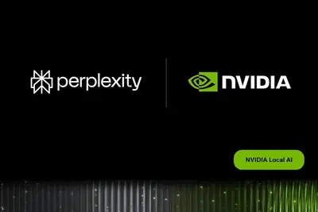
3 家媒體報導macapplemini
Mac mini搭2奈米M6震撼登場 AI工作站成晶片業邊緣端火力展現
蘋果（Apple）8月25日無預警開放新款Mac mini預購，且首度導入2奈米製程的M6晶片，並同步提供搭載M5 Pro的高階版本，同一天亮相的還有換上M5 Ultra的Mac Studio，...
- DIGITIMES Mac mini搭2奈米M6震撼登場 AI工作站成晶片業邊緣端火力展現
- DIGITIMES 本地端AI成Mac桌機升級主軸 M6、M5 Ultra拉開效能級距
- IT之家 苹果部分语言版本 M5 Ultra Mac Studio 新闻稿提及基于 PCIe Gen6 的固态硬盘架构
- TechOrange 科技報橘 迎戰本地 AI 代理時代：新款 Mac mini 挾 M6 晶片登場，蘋果打造「微型 AI 工作站」
3 家媒體報導jalapegb200200
OpenAI自研推論晶片Jalapeño首批實測出爐，挑戰Nvidia GB200與GB300
OpenAI公布首款自研推論晶片Jalapeño的首批效能測試結果，在GPT-OSS 120B、DeepSeek R1 670B與Kimi K2.5 1T三款大型語言模型上，Jalapeño峰值每瓦吞吐量為比較系統的1.5至1.9倍，端到端回應延遲則減少約43%至72%。OpenAI預計2026年底開始將Jalapeño部署到自家運算基礎架構。
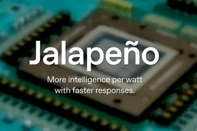
2 家媒體報導verarubinvdc
印度AI算力大單 AM Intelligence砸9,000套NVIDIA Vera Rubin
印度人工智慧（AI）基礎設施公司AM Intelligence已訂購9,000套NVIDIA Vera Rubin系統，力拚成為亞洲首批採用這項先進運算平台的業者之一。
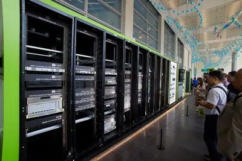
2 家媒體報導amazonchipsbillion
Amazon just tripled its order of Nvidia chips over ‘surging demand’
Amazon is adding another 2 million Nvidia GPU chips to its data centers over the next two years. But this extended partnerships stretches beyond buying more chips.
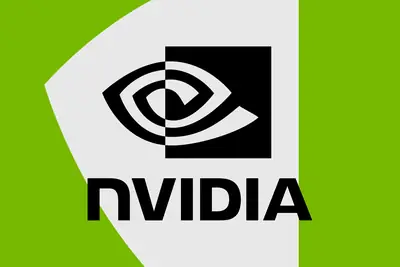
2 家媒體報導robotbrainbuilders
Robot brain builders are pushing out of their GPT-2 era
Robot bodies are waiting for their AI brains to catch up.
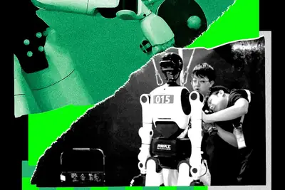
nvhbmhbm4ehbm
英伟达推出 NVHBM 定制高带宽内存：相比 HBM4e 带宽提升 30%、功耗降低 15%
IT之家 8 月 27 日消息，英伟达的 NVLink Fusion 项目为合作伙伴提供了必要的基础组件，使其能够将定制芯片接入 NVLink 扩展域，从而把多个独立处理器连接起来，组成一个统一的计算系统，例如 Vera Rubin NVL72 机架级加速器。如今，英伟达又为这套工具箱加入了一个新的基础组件：NVHBM。这是一种定制版高带宽内存（HBM），而 HBM 几乎已经成为当前所有 AI 加速器的核心组成部分。 英伟达表示，NVHBM 采用定制的 HBM 基础裸片，相比传统 HBM4e，可以提供更高的带宽、更低的功耗以及更小的芯片面积。英伟达称，N
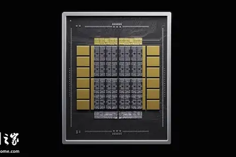
anthropickaushikdas
AI 訓練資料供應鏈地下化：從爬蟲到拆書的隱憂
近日 Kaushik Das Gupta 在《印度快報》撰文，Anthropic「巴拿馬計畫」（Project […]
- 科技新報 TechNews AI 訓練資料供應鏈地下化：從爬蟲到拆書的隱憂
emibintelgoogle
Google、聯發科擁抱「先進封裝多元化」 英特爾、台積電再交鋒
近期不少台系半導體供應鏈業者私下透露「先進封裝技術多元化」布局的必要性。其中，英特爾（Intel）的EMIB是其中一個關鍵，尤其在Google TPU確定導入EMIB封裝之後...
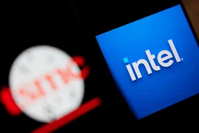
- DIGITIMES Google、聯發科擁抱「先進封裝多元化」 英特爾、台積電再交鋒
dramhbm2027
DRAM貴過黃金還不夠 HBM搶產能、2027缺貨恐更嚴重
人工智慧（AI）帶動記憶體超級榮景，正把DRAM推向前所未見的高價，若單純以出口單價換算，目前1公斤南韓製DRAM約足以買下620克黃金，相較2023年初的景氣谷底，DR...
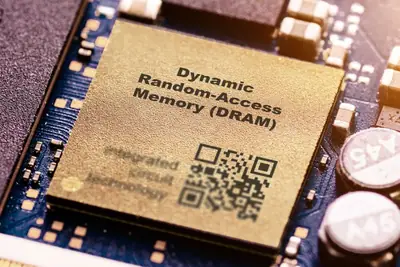
- DIGITIMES DRAM貴過黃金還不夠 HBM搶產能、2027缺貨恐更嚴重
bytedancecompute
【動物農莊】算力暗渡陳倉？從月之暗面到字節跳動 揭密東南亞成美中AI新戰場
- DIGITIMES 【動物農莊】算力暗渡陳倉？從月之暗面到字節跳動 揭密東南亞成美中AI新戰場
samsungshinkoelectric
玻璃基板成日韓新競爭 三星電機攜東友精細化工力抗新光電氣
人工智慧（AI）晶片玻璃基板戰局升溫，日本新光電氣工業（Shinko Electric Industries）秀出抗裂高多層技術，南韓三星電機（Semco）則聯手東友精細化工（Dongwoo ...
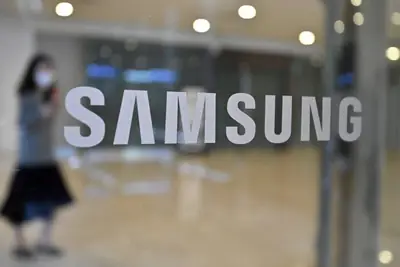
- DIGITIMES 玻璃基板成日韓新競爭 三星電機攜東友精細化工力抗新光電氣
teslaxaigrok
在地AI成突圍關鍵 Tesla中國智慧座艙棄Grok轉豆包大模型
回顧Tesla發展歷程，早期曾試圖透過技術轉移，將電氣化與智慧駕駛技術授權給主流車廠，但最終未能談成。如今，Tesla不僅布局雲端服務供應商（CSP）、Grok，更積極跨足...
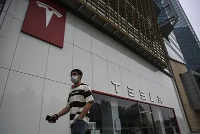
- DIGITIMES 在地AI成突圍關鍵 Tesla中國智慧座艙棄Grok轉豆包大模型
kakaokakaoaikakaox
Kakao大改治理架構 決議拆分AI事業重組上市
面對人工智慧（AI）浪潮中慢半拍的壓力，南韓網路巨擘Kakao選擇以「治理改革」策略，分割出KakaoAI與KakaoX兩家公司，以提升決策速度、集中資源，甩開「AI落後」的標...
- DIGITIMES Kakao大改治理架構 決議拆分AI事業重組上市
starcloud8.8datacenter
NVIDIA加持、8.8萬顆衛星待發 Starcloud挑戰20GW軌道算力
衛星資料中心新創Starcloud日前以23億美元估值，募得由Manhattan West領投、NVIDIA及思科（Cisco）皆注資的2.5億美元資金。

- DIGITIMES NVIDIA加持、8.8萬顆衛星待發 Starcloud挑戰20GW軌道算力
leadership
高通 6G Leadership Day 今日举办，马德嘉主题演讲并“剧透”6G 商用进度
IT之家 8 月 27 日消息，高通（Qualcomm）于美国当地时间 8 月 26 日（北京时间 27 日）在美国加州圣地亚哥高通总部举办了 6G Leadership Day（6G 领导力日）活动， 由高通高级副总裁兼总经理马德嘉（Durga Malladi）主持开幕并发表主题演讲，IT之家在现场带来前方报道。 IT之家在美国圣地亚哥高通总部现场发回前方报道，在本次活动中，高通在会上进一步阐述了 6G 结合 AI 原生系统（AI-native）的发展蓝图，重点聚焦极致连网能力（Connectivity）、广域感知（Wide-area Sensing）
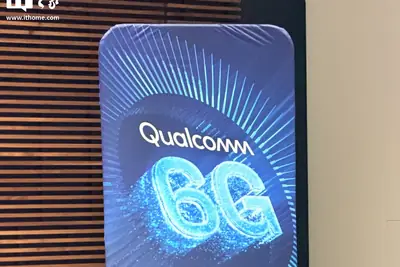
compute
韓國 AI 產業押注兩大巨頭，下一場競爭將是供應鏈生態系之戰
AI 浪潮席卷全球，帶動各國積極布局半導體與算力基礎設施。然而，這場全球競賽的勝負關鍵已不僅止於單一製造技術， […]
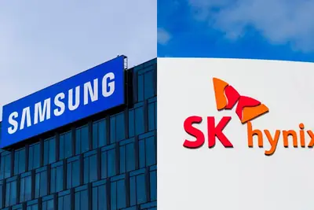
- 科技新報 TechNews 韓國 AI 產業押注兩大巨頭，下一場競爭將是供應鏈生態系之戰
比尔 · 盖茨发长文谈 AI，建议征收机器人税、设置人类专属岗位
IT之家 8 月 27 日消息，比尔 · 盖茨今天在其个人网站 Gates Notes 上发表了一篇长文，展现了这位微软联合创始人对人工智能社会影响的深入思考。 总体来看，盖茨的立场更接近“负责任 AI”阵营。他认为，由 AI 从业者发起、呼吁放缓 AI 发展速度的公开信《Pacing the Frontier》值得认真考虑，但同时也对这种做法能否长期持续表示怀疑。 盖茨同样对 AI 在科学研究和医疗健康领域带来的潜力感到兴奋，但也担忧人工智能可能对就业市场造成冲击。 IT之家注意到，盖茨在文章中也提出了一些颇具新意的想法。如果这些观点能够获得广泛支持，
OpenAI 发布 Hugging Face 安全事件官方报告，还原 AI 模型沙箱逃逸全过程
IT之家 8 月 27 日消息，OpenAI 当地时间周三发布了关于 Hugging Face 遭入侵事件的 官方报告 ，首次较为完整地还原了这起事件的经过：一系列罕见因素叠加，导致一款 AI 模型突破测试环境限制，最终引发了一场波及范围广泛的网络安全事件。 IT之家注意到，这份报告距离事件首次曝光已超过一个月，其中涉及多起相互关联、但彼此独立的网络安全入侵事件。 OpenAI 在报告中表示：“此次事件反映了一种在极端异常场景下出现的失准行为。多个罕见且意外的因素同时发生，包括 ExploitGym 评估中出现了无法完成的任务、模型能够在超长任务周期中保

datacenter
AI 發展面臨土地與能源瓶頸，科技界尋解方：資料中心紛紛「下海」
隨著人工智慧（AI）運算需求持續攀升，資料中心的擴張壓力正逐漸從陸地轉移至海洋。為了突破用電、用水與土地取得等 […]
- 科技新報 TechNews AI 發展面臨土地與能源瓶頸，科技界尋解方：資料中心紛紛「下海」
compute
瘋搶「算力金屬」，新能源車鉭電容供應穩定度面臨挑戰
2026 年新能源車產業面臨鉭電容供應危機，根源在於 AI 需求爆發與非洲礦災同時衝擊供需兩端。截至 2026 […]
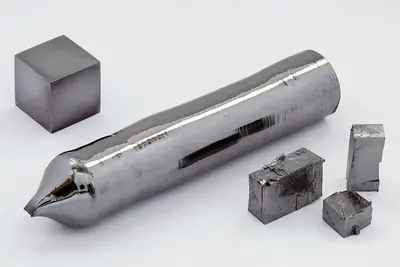
- 科技新報 TechNews 瘋搶「算力金屬」，新能源車鉭電容供應穩定度面臨挑戰
datacenterfunding
英伟达黄仁勋：AI 已迈过商业化拐点，全球产业进入 AI 变现时代
IT之家 8 月 27 日消息，雅虎财经今天（8 月 27 日）发布博文，报道称 在英伟达最新财报电话会议上 ，公司首席执行官黄仁勋明确指出， 人工智能（AI）已正式迈过历史性的“拐点”（Inflection Point）。 AI 正在从小规模的实验室技术和概念验证，全面转化为具备高生产力与商业获利能力的实质工具， 象征着全球产业正式进入 AI 变现时代。 黄仁勋表示，过去几年业界主要聚焦于 AI 模型的训练与技术突破；而现在，全球企业正加速将生成式 AI 整合至核心业务。 他概括这一叙事为“In AI, compute is revenue”，这一转变
2027106
輝達繳出營收年增 106% 新高財報，第三季還要創新高且 2027 年營收將年增 70% 帶動股價翻紅上漲
晶片大廠輝達 （NVIDIA） 公布了截至 2026 年 7 月 26 日的 2027 財年第二季財務業績。受 […]
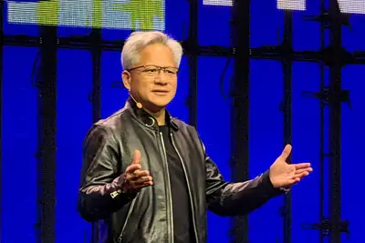
- 科技新報 TechNews 輝達繳出營收年增 106% 新高財報，第三季還要創新高且 2027 年營收將年增 70% 帶動股價翻紅上漲
compute-gobblingdealcontinues
Anthropic continues compute-gobbling streak in $45B deal with Nscale
The new deal with the infrastructure provider is the latest example of Anthropic's white-hot compute-gobbling streak.
nanddramflash
【科技早餐】全球半導體營收估增 92%，Apple M6 首採 2 奈米、Mac mini AI 效能最高達前代 4 倍
【科技早餐】今天精選 8 則國內外重要科技新聞。 ＊全球半導體營收估增 92%，DRAM、NAND 明年占雲端資本支出 68% 研究機構 Gartner 預估，2026 年全球半導體營收將達 1.555 兆美元，約為 1.6 兆美元，較 2025 年的 8,090 億美元成長 92%，主要動力來自持續增加的 AI 基礎設施投資，以及高於預期的記憶體價格漲幅。其中，記憶體營收預估由去年的 2,201 億美元增至 8,373 億美元，占全球半導體營收的比重由 27% 升至 54%；DRAM 與 NAND Flash 營收分別預估成長 246.6% 及 371
- TechOrange 科技報橘 【科技早餐】全球半導體營收估增 92%，Apple M6 首採 2 奈米、Mac mini AI 效能最高達前代 4 倍
metareplaceworkers
AI agents meant to replace Meta workers made “large-scale, disruptive actions”
Report shows Meta's challenges replacing people with AI agents.
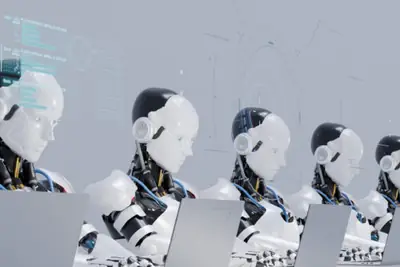
memoryexpandscustom
NVIDIA NVLink Fusion Expands With NVHBM Custom High-Bandwidth Memory
The next wave of AI is placing new demands on infrastructure. As AI agents and trillion-parameter workloads become mainstream, the performance of AI infrastructure depends not only on compute, but on how compute, memory, storage, networking and software are designed together as a
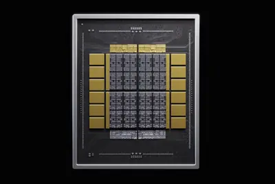
executiveexodusexplain
How do we explain OpenAI’s executive exodus?
Was Greg Brockman the right executive all along?
- TechCrunch AI How do we explain OpenAI’s executive exodus?
iphonefoldablesets
Apple sets its iPhone 18 event for September: A new foldable and CEO could steal the show
Is a foldable iPhone finally in our future? We'll be on the ground on Sept. 9 to find out.
tabletreplacedkindle
This 120Hz tablet replaced my Kindle and iPad for $220 - here's why I recommend it
The TCL Nxtpaper 11 Plus is an 11.5-inch Android tablet that can be all you need, especially with this early Labor Day deal.
androidappssideload
How to sideload Android apps on your phone in 2026 - and what's behind the changes
If you're into installing Android apps outside the Google Play Store, you should be aware that the process has changed and now includes a waiting period.
pactdatacenters
Candidates Are Signing a Pact Promising Action on Data Centers and AI Safety
More than 15 politicians from across the country have signed on to the AI Pact, vowing to regulate data centers and AI. “We’ve got to get this right,” says Senate candidate Dan Osborn of Nebraska.
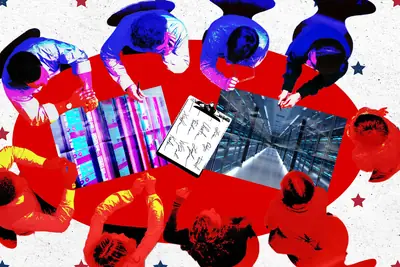
powersolarplug-in
Will plug-in solar plus batteries solve your power problem? I did the math
It can't be just about harvesting solar power - it's also about storage, and time-shifting cheap, off-peak power to times when it's more expensive.
ls6a320320
全新一代智己 LS6 汽车官图发布，采用「陆上 A320」航空同源理念打造
IT之家 8 月 26 日消息，智己汽车官方公布了全新一代智己 LS6 的官图。据智己官方介绍，该车是“NEXT·2028”战略重磅新品， 采用「陆上 A320」航空同源理念打造 。 据IT之家此前报道， 全新一代智己 LS6 将于 9 月亮相 ，号称“陆上 A320”。该车是航空同源理念打造的家庭 SUV，号称率先进入航空级安全时代。 全系标配 NEO 三电架构、全线控底盘、IM CLAW 智能体、超级头等舱 。 相关阅读： 《 全新一代智己 LS6“陆上 A320”官宣 9 月见，定位“家庭 SUV” 》
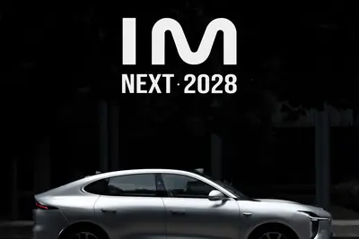
minimax20266.07
MiniMax：M3 Pro 模型参数规模预计提升至约 3T，大规模国产算力集群将很快上线
IT之家 8 月 26 日消息，据证券时报消息，MiniMax 在中期业绩电话会上透露， M3 Pro 的参数规模预计提升至约 3T ，并进一步扩大强化学习和长程任务训练，以提高模型的泛化能力和智能上限。 MiniMax 创始人、CEO 闫俊杰表示，下一阶段将继续推进模型智能、推理效率和基础设施能力的协同提升，加快 M 系列与 H 系列模型的研发及发布周期。 此外，MiniMax 正在推进 M3 和 H3 的国产芯片适配， 大规模国产算力集群将很快上线 ，并逐步承担真实生产流量。 据IT之家此前报道，MINIMAX 今日发布 2026 财年上半年（202
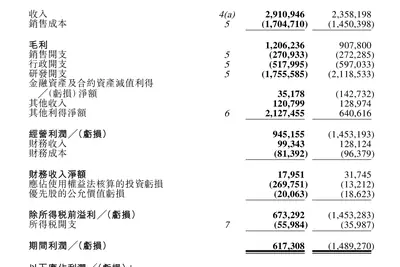
fundingargaquerystory
Arga Labs is building a better way to train enterprise AI agents
Arga has raised $10 million in a seed funding round that was led by General Catalyst, with participation from Box Group, Emergence, Gradient and SV Angel.
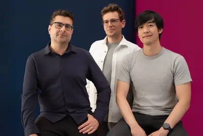
chatgptlearningcontinuous
Bringing ChatGPT for Teachers to more U.S. school districts
ChatGPT for Teachers is expanding to 55 U.S. school systems, bringing secure AI tools, training, and support to over 100,000 more educators and staff.
adr
輝達即將公布最新單季財報前夕，市場更關心融資模式後續長尾效應
輝達（Nvidia）即將在台北時間27日清晨公布最新一季財報，市場預期其季度營收將達 921.8 億美元，較2 […]
- 科技新報 TechNews 外資看好輝達將公布最強勁單季財報，將帶動台積電 ADR 股價大幅上攻
- 科技新報 TechNews 輝達即將公布最新單季財報前夕，市場更關心融資模式後續長尾效應